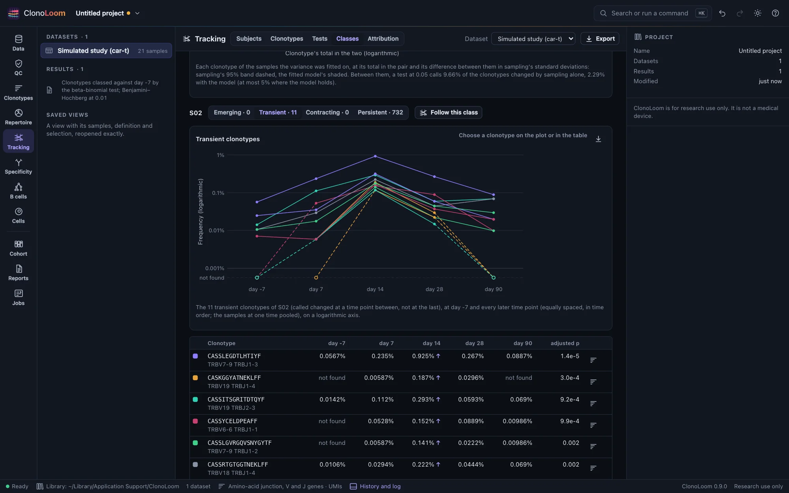
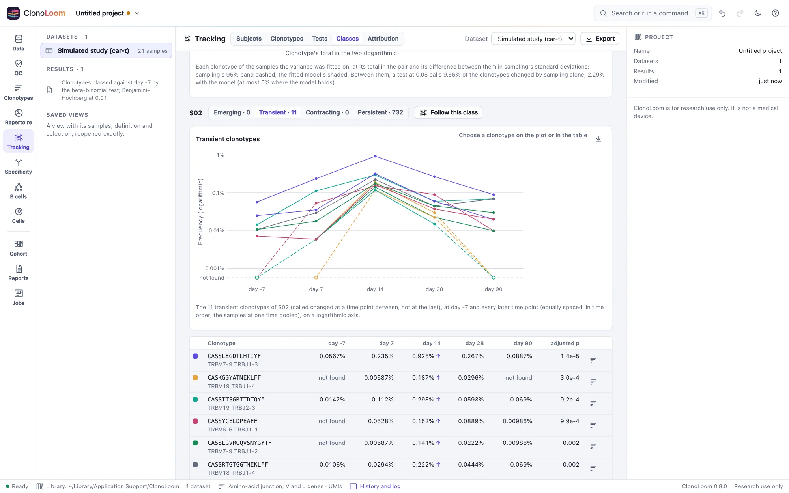

Classes across time points
The Tracking view's Classes part tests each clonotype of each subject between a base time point and every later one, and classes it by those calls. It counts each subject's clonotypes by class, draws a class through the time points, and follows it on request.
The classes


Open Tracking › Classes and choose the base time point (Against; the first other than the reference sample's by default). Each later time point is compared with it, by the Tests part's test, the false discovery rate controlled within each comparison (Expanded and contracted clonotypes). A clonotype is:
- Emerging: called increased at the last time point.
- Transient: called changed at a time point between, not at the last.
- Contracting: called decreased at the last time point.
- Persistent: never called, and found at the base and at every later time point.
The others (never called, and missing at one time point or more) are counted but not classed. A clonotype called at one of several comparisons is more likely a false discovery than one called at a single comparison, and the view says so.
Reading the result
- Clonotypes by class: each subject's clonotypes called changed, stacked by class, and every class counted in a table.
- The beta-binomial test's variance, where it was fitted, as in the Tests part.
- One subject's clonotypes of the class chosen as threads through the base and later time points, and in a table with their frequency at each, the calls marked ↑ and ↓, and the least adjusted p-value. A row's button shows the clonotype in the Clonotypes view.
- Follow this class follows each subject's 20 most significant clonotypes of the class (the largest, for persistent ones) in the Clonotypes part, with their intervals.
On the simulated CAR-T study, with its variation between blood samples, the 20 clonotypes classed by their calls were all classed the way the truth's frequencies moved: the product's expanding clones, transient, peaking two weeks after the infusion.
Using the result
The plots save as figures. Export writes each classed clonotype at each time point, with its call, each subject's counts by class, and the fit, as CSV. The methods paragraph says how the clonotypes were classed. Scripts use class_clonotypes, and track_clonotypes with by: "class" (Remote control).